User manual of the control interface of the setup
Institut Curie — version of 29 October 2026
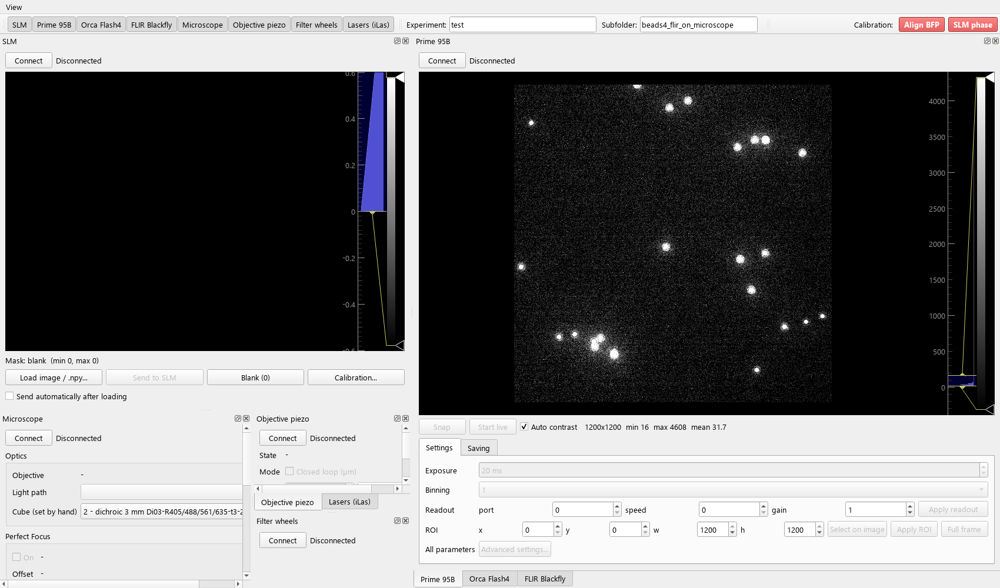
conda activate setup_env then python setup_gui.py in Documents\GitHub\interface_setup.There is one panel per device: SLM, Prime 95B, Orca Flash4, FLIR Blackfly, Microscope, Objective piezo and Filter wheels. Each panel is a dock window:
| Action | How |
|---|---|
| Show / hide a panel | Toolbar buttons, or the View menu |
| Move a panel | Drag its title bar next to another panel, or onto it to make tabs |
| Separate window, e.g. on another screen | Double-click the title bar, or drag it out |
| Put the separate windows back | View > Dock all panels |
| Default arrangement | View > Reset layout |
The arrangement is saved when the window is closed and restored at the next start. By default:
Set the experiment name in the Experiment box of the toolbar. All the cameras then save in:
D:\BUMBLEBEE_acquisitions\YYYY_MM_DD_<experiment> (date of the acquisition)
YYYY_MM_DD_<experiment>\<subfolder>, created when needed.< > : " / \ | ? * are not allowed. The name turns red in the camera panel if it is invalid.All the information (camera, settings, state of every device) is in the metadata, so file names are just numbers. In a folder, the acquisitions are numbered 0, 1, 2… in the order they are made, whichever camera made them; this covers snaps saved with “Save last image” and sequences.
| File | Content |
|---|---|
X_Y.tiff | Acquisition X, file Y. A sequence larger than ~10 GB is split into X_0.tiff, X_1.tiff… Each file has the metadata in its first image, with file_index and first_frame. |
X.json | Metadata of acquisition X, readable in any text editor. It includes the number of frames really saved and the list of its files. |
X_frames.csv | Sequences: time and SLM mask of each frame (see section 12). |
X_slm_masks\ | The SLM masks shown during acquisition X, numbered 0, 1… (only if a mask was shown). |
X_calibrations\ | Copies of the calibration files that corrected the SLM mask (only if one was linked). |
The camera panel shows the name of the next acquisition under the folder (“next acquisition: 3_0.tiff + 3.json”). A number is never reused: the next one is 1 + the highest found in the folder.
C:\BUMBLEBEE_staging (NVMe SSD), then moved to D: in the background. D:, E: and F: are hard disks, too slow for the cameras at full speed.The Prime 95B, Orca Flash4 and FLIR Blackfly panels work the same way.
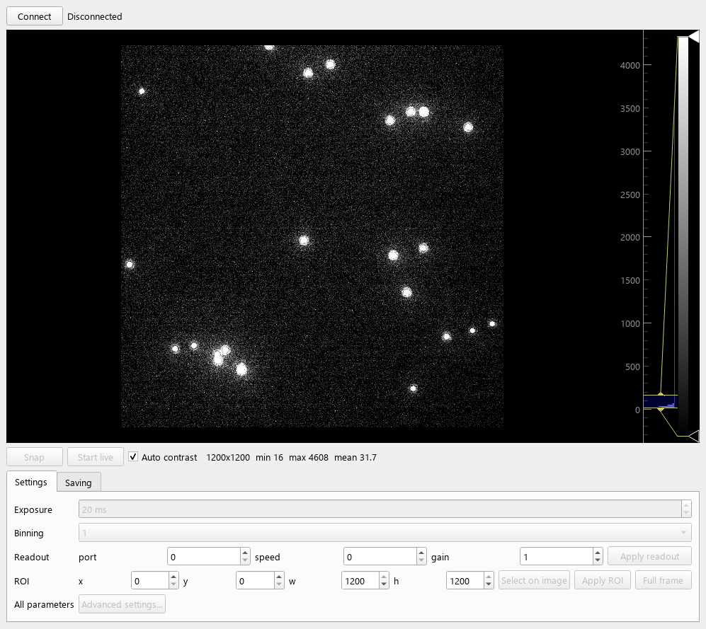
| Setting | Use |
|---|---|
| Exposure | In ms. Applied when you leave the field (Enter or Tab). |
| Binning | Applied immediately. |
| Readout | Prime: port / speed / gain indexes + Apply readout. Valid combinations: speed 0 with gain 1 (full well), 2 (balanced) or 3 (sensitivity); or speed 1 with gain 1 (HDR, 16 bit). Orca: fast (standard) / slow (low noise). FLIR: gain in dB (automatic gain off). |
| ROI x, y, w, h | Apply ROI. Full frame goes back to the whole sensor and binning 1. The Orca rounds the ROI to 4 pixels. |
| Select on image | A yellow rectangle appears on the image. Move it, and resize it with its corner handle; x, y, w, h follow, in full-sensor pixels. Then Apply ROI. |
| Advanced settings… | All the parameters of the camera, with their value, range, whether they can be changed, and a short description. The search box searches names and descriptions; there are “Adjustable only” and “Changed only” filters. A choice, or Enter in a value field, applies it at once; the live is paused meanwhile. Closing the window does not undo a change. Prime only, see below: default, highlighting and Reset. |
Prime advanced settings: defaults. The “Default” column is the normal state of the camera, as it is when opened. One exception: the temperature setpoint stays in the camera after closing, until the camera is switched off, so its default is fixed at −15 °C. A parameter different from its default is highlighted in orange; tick Changed only to see just those. Reset to defaults… sets them all back, except exposure, binning and ROI, which are main-panel settings. Disconnect / Connect also restores everything except the temperature setpoint, so use Reset for that. The Orca and FLIR windows have no default column.
Despeckle filters off. The Prime can replace isolated pixels much brighter or darker than their neighbours (4 “despeckle” filters). It turns them on each time it is opened. Bumblebee turns them off at every connection, so the data are raw. Their state is saved in the metadata of every image, under post_processing.
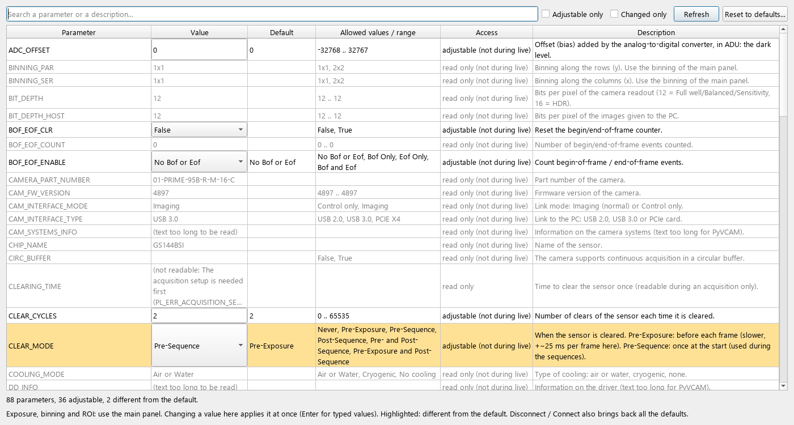
If the live is running, it is paused while a setting is changed or a sequence is acquired, then restarted.
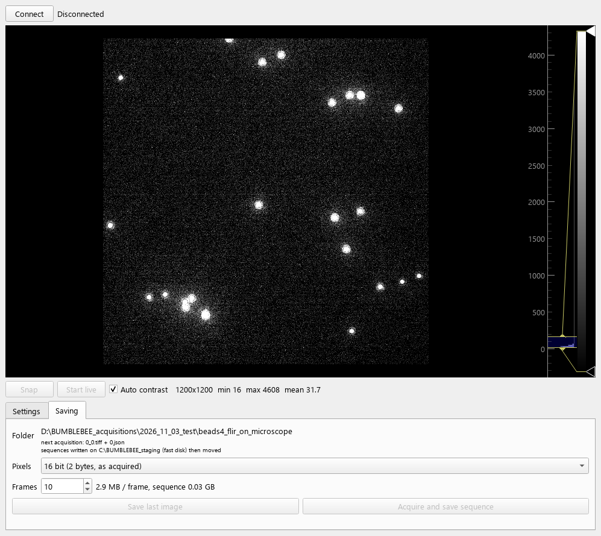
| Field | Use |
|---|---|
| Folder | Destination (section 4), next acquisition number, and whether sequences go through the fast disk. |
| Pixels | 16 bit: 2 bytes per pixel, as acquired. 8 bit: half the size, but only the 8 highest bits of the camera value are kept; faint signals become coarse. The camera value is about saved value × 2saved_value_shift (in the metadata). The live is not changed. |
| Frames | Number of frames of a sequence, up to 10 million. The size of one frame and of the sequence is shown next to it. |
| Save last image | Saves the last snap (or the last frame of the last sequence) as the next acquisition. |
| Acquire and save sequence | Acquires the frames and writes them to disk as they arrive (section 6). |
Size of one full frame, 16 bit / 8 bit (binning 2: divide by 4):
| Camera | Sensor | One frame | 1000 frames |
|---|---|---|---|
| Prime 95B | 1200 × 1200 | 2.9 / 1.4 MB | 2.9 / 1.4 GB |
| Orca Flash4 | 2048 × 2048 | 8.4 / 4.2 MB | 8.4 / 4.2 GB |
| FLIR Blackfly | 2448 × 2048 | 10.0 / 5.0 MB | 10 / 5 GB |
X_frames.csv. The frame time is the exposure, or the readout (12.4 ms at full frame) if the exposure is shorter: up to 80 frames/s at full frame. Tested on 29/10/2026 with 10 000 frames at 80 frames/s and no frame lost. During a sequence the sensor is cleared only once at the start; the setting is put back afterwards.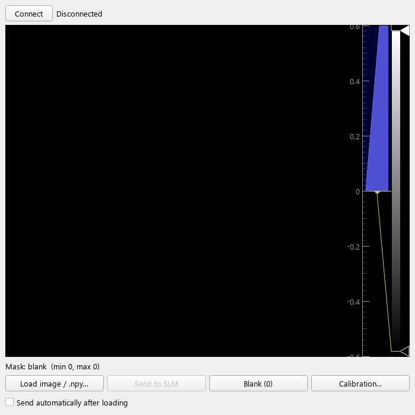
Desktop\SLM_masks, which holds ready-made masks: two_vortex.png and diffraction_633nm_0.1deg_rot45.png, a diagonal grating as the “Diffraction” pattern of the Thorlabs software (633 nm, deviation 0.1°, rotation 45°: period 45.3 px). Other masks can be added to the folder. It must be 1200 × 1920 with integer values 0–255. It is checked and previewed.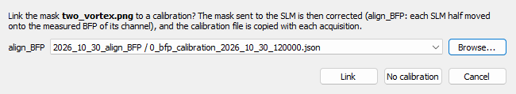
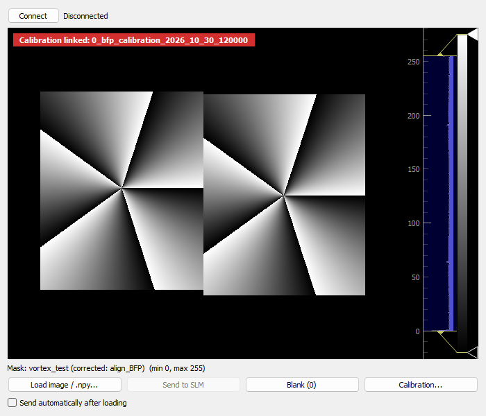
X_slm_masks\, and its number for each frame (section 12). If a calibration corrected it, the calibration file is copied to X_calibrations\.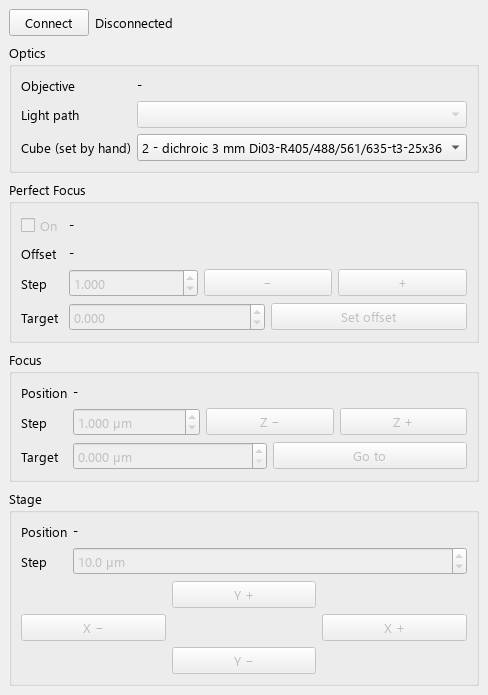
| Control | Use |
|---|---|
| Objective | Shown only, never changed from software. Position 3 is the Apo TIRF 100× NA 1.49 oil. |
| Light path | Eye / Left / Right / Left80, about 3 s per change. The box is red when the light goes left, green when it goes right. |
| Cube (set by hand) | The turret is not motorised. Choose the cube in place so that it is saved with the images (default: cube 2, dichroic Di03-R405/488/561/635). It is remembered between sessions. |
| Focus | Z − / Z + by Step (max 100 µm). Go to an absolute position (asks for confirmation beyond 100 µm). |
| Stage | X − / X + / Y + / Y − by Step. |
| Perfect Focus | On locks the focus: oil under the objective, sample near focus first. The status is green when locked, orange when searching, red when out of range or in error. Offset: − / + by Step move the focal plane while the focus is held; Target + Set offset for an absolute value. |
Positions are read every 0.5 s. The Perfect Focus needs the objective to be registered in the microscope (TiControl, see Troubleshooting).
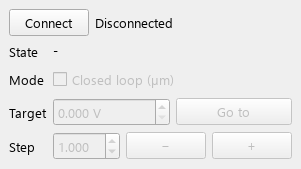
| Position | Wheel A (left) | Wheel B (right) |
|---|---|---|
| 1 | 690/40 (exc. 640) | 617/40 |
| 2 | 607/36 (exc. 560) | MF469/35 |
| 3 | 520/70 (exc. 488) | 525/50 |
| 5 | open | – |
Other positions: no filter registered. The list is in filter_wheel.py (FILTERS).
The calibration buttons are in the upper right corner of the window, at the end of the toolbar row (“Calibration:”), whatever the arrangement of the panels: one button per calibration. Each calibration is for one light path of the microscope, and its button has the colour of that path: red = left, green = right. Each button opens a step-by-step window. The rest of Bumblebee stays usable while it is open, for example to connect a device or look at a camera.
| Step | What to do |
|---|---|
| 1. Optical elements | Put the listed elements in the light path and tick each one. Next is enabled once all are ticked. |
| 2. Devices | The devices the calibration needs: connected or not connected, checked twice per second. Connect them with the Connect button of each line, or in their panel. Next is enabled once all are connected. |
| 3. Light path | The microscope goes by itself to the light path of the calibration (left or right), shown in its colour; Go to the … path does it again. Choose the emission filter of that path (Show the filter wheels), then tick. Next is enabled once the microscope is on that path and the box is ticked. |
| 4, 5… | The steps of the calibration: instructions, buttons acting on the panels (show a camera, start its live…), a status line, sometimes a box to tick before Next. |
Closing the window and clicking the button again starts from step 1.
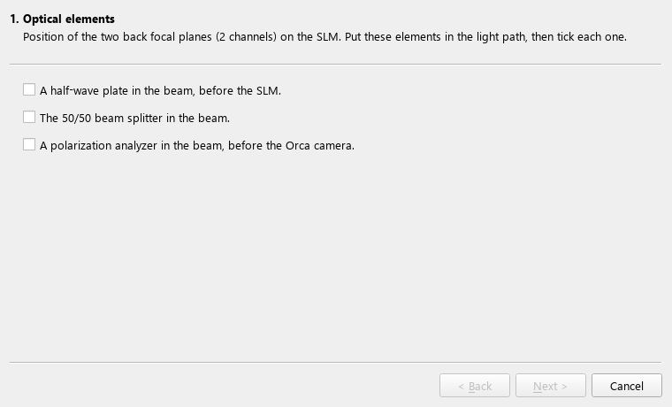
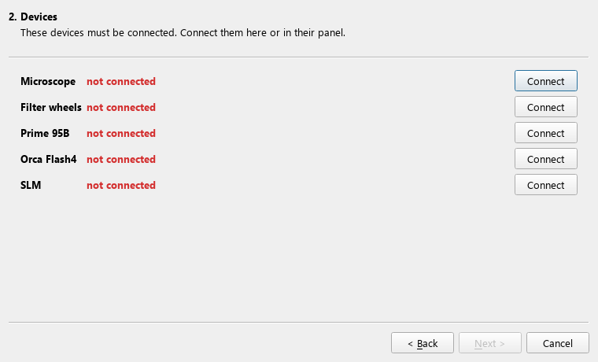
align_BFP)Goal: the real position of the two back focal planes (2 channels) on the SLM. Left path (red).
| Step | What to do |
|---|---|
| 1. Optical elements | A half-wave plate before the SLM, the 50/50 beam splitter, and a polarization analyzer before the Orca. |
| 2. Devices | Microscope, filter wheels, Prime, Orca, SLM connected. |
| 3. Light path: Left (red) | The microscope goes to the left path by itself. Choose the emission filter of the left path (red) and tick. |
| 4. Beads in focus on the Prime | Put the TetraSpeck beads sample (size 1) on the microscope. Show the Prime, Start / stop Prime live, focus on the beads, then tick “The beads are in focus on the Prime”. No Perfect Focus: it does not lock on TetraSpeck beads. Next stops the Prime live. |
| 5. Phase masks recorded on the Orca | The recording has 4 masks: the vortex, shifted along x, shifted along y, and the vortex in SLM half 0 only (it tells which disk is which half). Show the Orca, Start / stop Orca live: the two BFP disks must be visible and not saturated. To check a mask before recording, choose it in the list (vortex, shifted along x, shifted along y) and click Show on the SLM: it is put on the SLM with the current settings and stays there, so you can look at it on the Orca live. Then Record the vortex masks: in each half of the SLM, a vortex whose phase grows by “phase around the centre” (10π by default) over one turn. On the Orca it gives contrast lines pointing to the vortex centre (5 periods for 10π). Then the same vortex shifted along x and along y (“vortex shift”, 50 px), which gives the scale and rotation between SLM and Orca. Only the shape matters: gray level 255 is taken as 2π (the exact SLM phase will come from a separate calibration).
The recording is saved as an acquisition in D:\BUMBLEBEE_calibration\align_BFP\YYYY_MM_DD (whatever the experiment name), with the masks and the mask of each frame. The Orca live is paused meanwhile, and the SLM mask shown before is put back after. Next once the vortex masks are recorded. |
| 6. Position of the BFPs on the SLM | Analyse the recording (the one just made; Analyse another recording… for an older one), about 20 s per disk, Bumblebee stays usable. For each BFP disk on the Orca, its edge is fitted by an ellipse and the centre of the 5-fold vortex pattern is fitted; the shifted vortices give the scale and rotation between SLM and Orca, so the BFP centre is found in SLM pixels. The result (BFP centre row / column and radius for each SLM half, with statistical and systematic errors) is shown with a figure and written next to the recording: X_bfp_calibration_YYYY_MM_DD_HHMMSS.json and .png (date and time of the analysis, so a new analysis never overwrites an earlier one). Link to the SLM masks links it to the SLM panel: the masks loaded there are then corrected with it (section 7), and it is copied with each acquisition. |
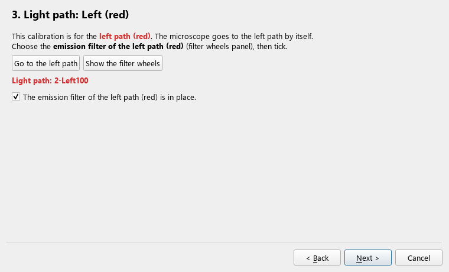
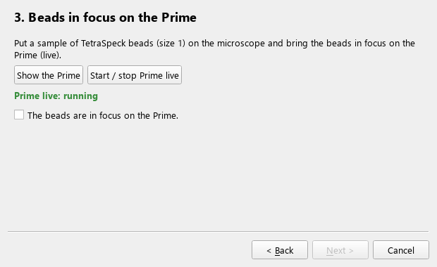
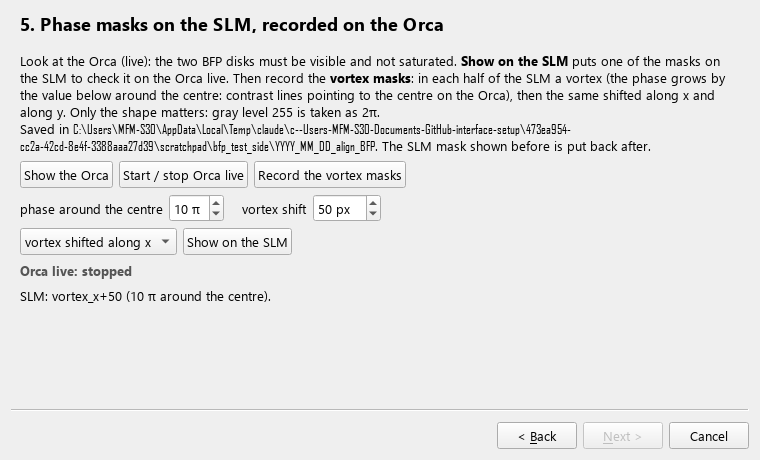
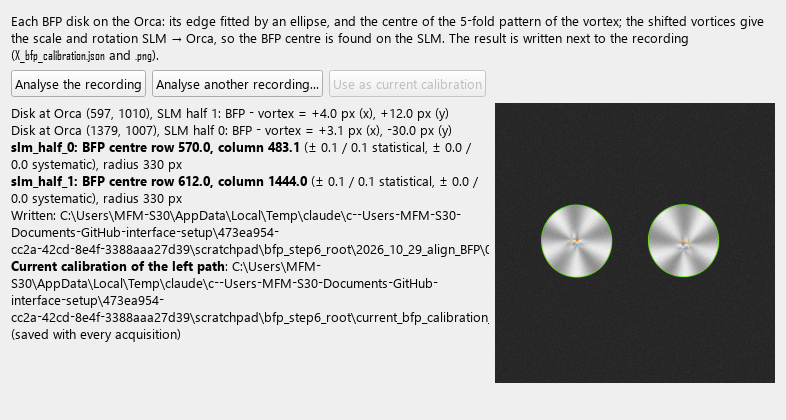
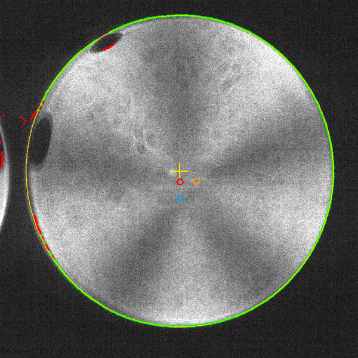
slm_phase)Goal: the phase applied by the SLM for each gray level 0–255, at every Orca pixel of the BFPs. The recording is the same whatever the channels; the analysis (step 7) takes by default only the disk centred in the right half of the Orca (one channel, the whole disk); choose Both channels there to analyse the two. Left path (red). Same optics as Align BFP; the analyzer before the Orca is the quarter-wave plate in its rotation mount, then the polarizer.
| Step | What to do |
|---|---|
| 1–3 | Optical elements, devices, left light path and emission filter, as for Align BFP. |
| 4. Wavelength | Enter the wavelength of the light reaching the Orca (centre of the emission filter). It gives the retardance of the quarter-wave plate used by the analysis. |
| 5. Beads in focus on the Prime | As for Align BFP. |
| 6. Gray level ramp | The exposure box sets the Orca exposure time (same setting as in the Orca panel; also in the recording step of Align BFP). First check on the Orca live, with a few flat masks (gray + Show flat mask on the SLM) and a few plate angles, that the disks are not saturated. Then Record the remaining angles: for each angle (0, 40… 320°) a window says “Turn the quarter-wave plate to X°”; turn it by hand and click OK. The SLM then shows the flat masks 0, step, 2×step… 255 and the Orca takes one image of each. The gray step (default 4: 65 images per angle) is next to the record buttons; it must be the same for all angles (changing it after some angles starts a new run, after a question). Cancel stops; the angles left can be recorded later. Record the selected angle again replaces one angle. Keep the same Orca settings for all angles. Saved in D:\BUMBLEBEE_calibration\slm_phase\YYYY_MM_DD. |
| 7. Phase of each gray level | Analyse the recording (Bumblebee stays usable). For each Orca pixel, the polarization at each gray level is measured from the 9 plate angles; the phase of gray level g is how far the polarization has turned (on the Poincaré sphere) about the axis of the SLM from gray level 0. Shown: plate zero offset, and for each disk the phase at 255, the gray level of 2π, the modulation. Written next to the recordings: .json (summary), .npz (phase of every gray level for every pixel), .png. |
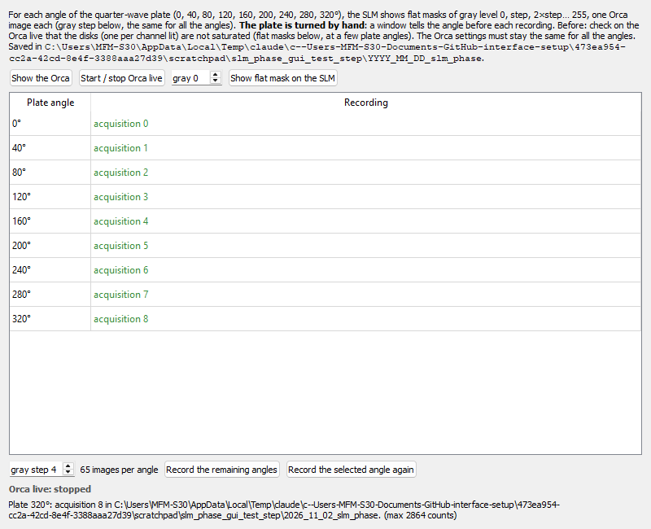
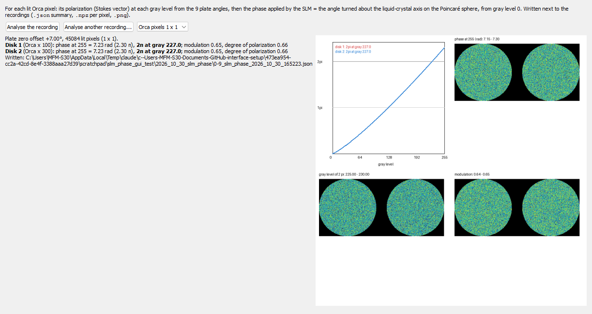
Bumblebee replaces Modular and MetaMorph for the laser powers and the galvos (tested 03/11/2026 with the 561 nm). Close Modular and MetaMorph first: only one program can drive the galvo card. Switch the laser emission on in the Oxxius software as usual; Bumblebee sets the power of each line.
The lines are listed in ilas_config.json (up to 6, one per channel of the card): see ilas_README.txt to add one.
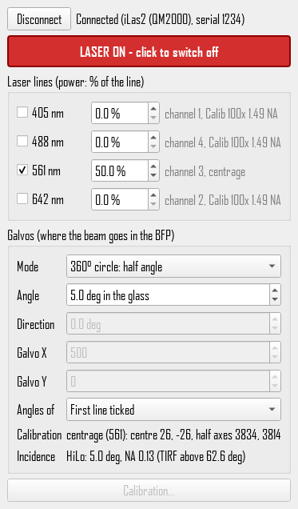
The metadata of acquisition X is in X.json, readable in any text editor, and in the first image of each TIFF file. It is recorded when the images are taken, not when they are saved: for a snap saved later, it is the state at the snap. It has 4 sections, in this order:
| Section | Content |
|---|---|
acquisition | Number X, camera, date, number of frames, how the frame times were measured, how the pixels are saved (16 or 8 bit), date of the first frame, list of TIFF files, frame-times file. |
devices | connected: every device, connected or not (SLM, the 3 cameras, microscope, piezo, filter wheels). Then the state of each side device, with connected again:
|
slm | Connected or not, link, monitor, size, settle time, name of the mask shown. Then the masks used in this acquisition (see below), and which mask each frame had. |
camera | The main settings first: serial number, exposure, sensor size, ROI, binning, bit depth, readout port / speed / gain, exposure and clear modes, temperature. Then advanced: every parameter of the advanced settings window, and for the Prime its image processing (post_processing: despeckle filters, QuantView). |
X_slm_masks\)X_slm_masks\0.png, 1.png…, numbered in the order they first appear. A mask shown again keeps its number. If the SLM keeps the same mask all along, there is a single 0.png.slm_mask of X_frames.csv for sequences, or slm.mask_of_each_frame in the .json for snaps. It holds the mask number, or none if no mask was shown or the SLM was not connected.slm.masks in the .json gives, for each mask: its number, file, name (as loaded in the SLM panel) and the first frame where it appeared.X_frames.csv)| Column | Meaning |
|---|---|
| frame | Frame number in the acquisition (0, 1…) |
| pc_time_s | PC clock when the frame arrived, in s from the first frame (the date of the first frame is in the .json) |
| camera_frame | Frame counter of the camera (1, 2…): consecutive if no frame was lost |
| camera_time_s | Prime: camera time stamp of the start of the exposure, in s. Use this for frame rates and vibration analysis. |
| slm_mask | Number of the SLM mask shown during the frame (file X_slm_masks\N.png), or none |
.tiff file in, or File > Import > Bio-Formats, “Use virtual stack” for very large files. A split sequence: open X_0.tiff, X_1.tiff… one after the other.import json, numpy as np, tifffile
from PIL import Image
meta = json.load(open("3.json"))
frames = np.concatenate([tifffile.imread(f) for f in meta["acquisition"]["files"]])
exposure = meta["camera"]["exposure_time_ms"]
clear_mode = meta["camera"]["advanced"]["CLEAR_MODE"]
z = meta["devices"]["microscope"].get("z_um") # None if the microscope was not connected
table = np.genfromtxt("3_frames.csv", delimiter=",", names=True, dtype=None, encoding=None)
times, masks = table["pc_time_s"], table["slm_mask"] # mask number of each frame, or "none"
mask_0 = np.array(Image.open("3_slm_masks/0.png"))2026_10_27_test\renamed_files.txt and in each .json (original_file_name).| Problem | What to do |
|---|---|
| Camera: every snap / live gives “Frame timeout” | The camera link is stuck, typically after a program holding it was killed. Close Bumblebee, switch the camera off for 10 s and on again, then reconnect. |
| Orca needed by MetaMorph or HCImage | Disconnect the Orca in Bumblebee, use the other program, close it, then Connect again in Bumblebee (it restarts the camera library; no need to restart Bumblebee). |
| “Frames lost” during a sequence | The PC could not keep up. Check that sequences are written on C: (staging) and that no other program writes heavily to the disk. Reduce the frame rate, the ROI, or use 8 bit. |
| “Not enough space on C: / D:” | Free some space, or acquire fewer frames, 8-bit pixels or a smaller ROI. Files still being moved count as used. |
| Microscope: “No device with label TILightPath”, or nothing found although the stand works by hand | Nikon's server is stale. Close Bumblebee and TiControl, end NikonTiS.exe in Task Manager > Details, then reconnect. |
| Perfect Focus: “Unsupported objective lens” | The objective registration was lost, which can happen after a power cycle. Disconnect the microscope in Bumblebee, open TiControl > Setting > Component > Nosepiece, set position 3 = Apo TIRF 100× NA 1.49 Oil, Send, OK. |
| SLM does nothing optically | Reseat the HDMI cable at both ends, then test with a grating: look for the first-order spot after the SLM. |
| The window is slow during the live | Long exposures or two cameras in live: the frames are read in the main window (see Known limits). |
| A Prime setting was changed in Advanced settings and you don't know which | Tick Changed only: the parameters different from the normal state are listed, highlighted. Reset to defaults… puts them all back. Closing the window does not undo a change. |
| Bumblebee stops with an error | The console window stays open with the message. Note it, then restart from the desktop icon. |
| Date | Changes |
|---|---|
| 03/11/2026 |
|
| 02/11/2026 |
|
| 30/10/2026 |
|
| 29/10/2026 |
|
| 28/10/2026 |
|
| 27/10/2026 | Filter wheels and shutters, FLIR camera, filter cube menu, dockable panels, staging on C: and moves to D:, free-space check, 8-bit saving. |
Technical details: setup_gui_README.txt and the README of each device in Documents\GitHub\interface_setup. The interface is about 4 600 lines of Python in 9 files (setup_gui.py 1 760, camera.py 660, saving.py 480, then one file per device). This manual is generated by manual\make_manual.py.